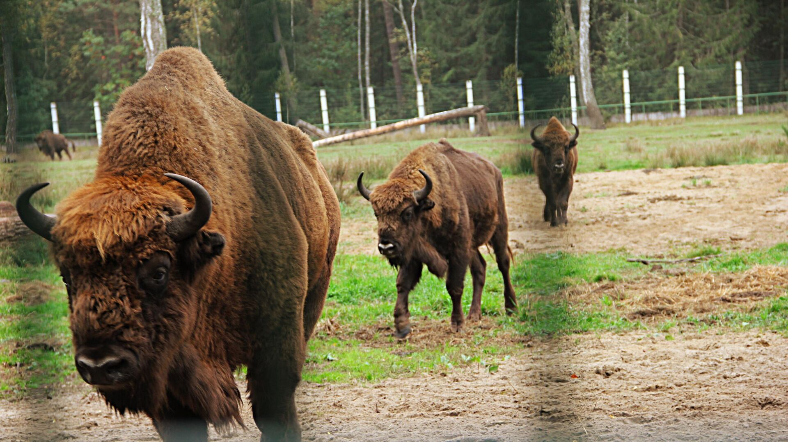
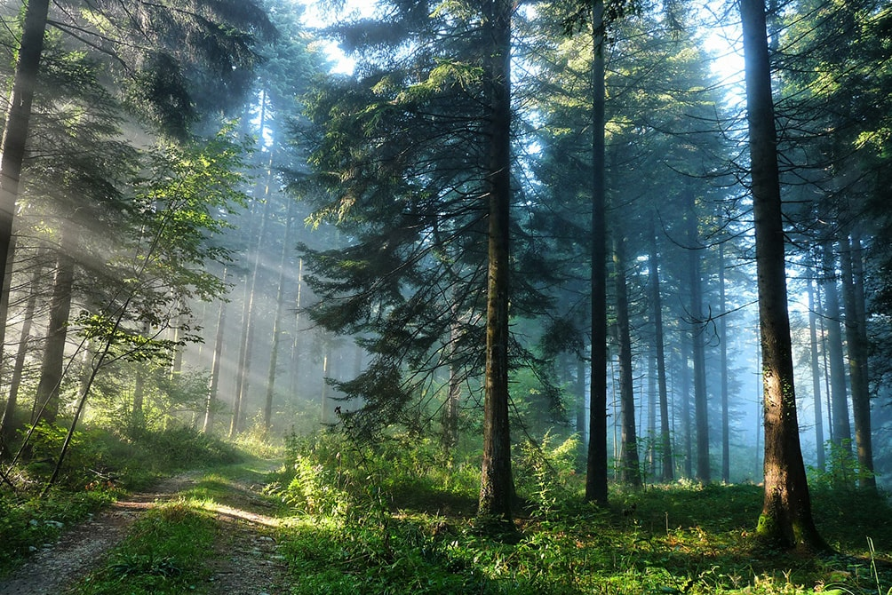

.
Беловежская пуща

Беловежская пуща – одна из важнейших достопримечательностей Беларуси. Это
остатки первобытного леса, простиравшегося когда-то от Балтийского моря до
реки Буг и от Одера до Днепра. В заповедных лесах этого парка произрастает
900 видов растений и обитает 250 видов животных и птиц, в том числе редкие
виды. Беловежская пуща расположена в Брестской и Гродненской областях,
входит в число четырех национальных парков Беларуси и является самым
большим лесом в центральной Европе. Заповедник находится в 340 км на
юго-запад от Минска. Административный центр парка расположен в поселке
Каменюки Каменецкого района, в 60 км от Бреста. В 20 км от Беловежской
пущи находится г. Каменец, на территории которого возвышается Белая вежа –
сторожевая башня, построенная в XIII веке. Предполагают, что этот памятник
дал название пуще. Первые письменные упоминания о Беловежской пуще
датируются 983 годом. В конце XIV века великий князь Великого княжества
Литовского Ягайло объявил пущу заповедной и установил здесь запрет на
охоту.

В 1588 г. был издан Лесной устав, запрещающий здесь также рубку леса. С
1795 г. территория Беловежской пущи вошла в состав Российской империи,
после Первой мировой войны – Польши, с 1939 г. входит в состав Беларуси.
Все крупные войны, проходившие на территории этих государств, наносили
значительный урон заповедному лесу. Особенно он пострадал во время
Наполеоновских войн, а также Первой и Второй мировых войн. Национальный
парк "Беловежская пуща" вошел в Список Всемирного культурного наследия
ЮНЕСКО в 1992 году. В 1993 году он получил статус биосферного заповедника.
В настоящее время Национальный парк "Беловежская пуща" является одним из
наиболее известных мест Беларуси. В Беловежской пуще произрастают более
1000 видов растений, в том числе редких и исчезающих. Парк знаменит своими
древними именными дубами, возраст которых превышает 500 лет.